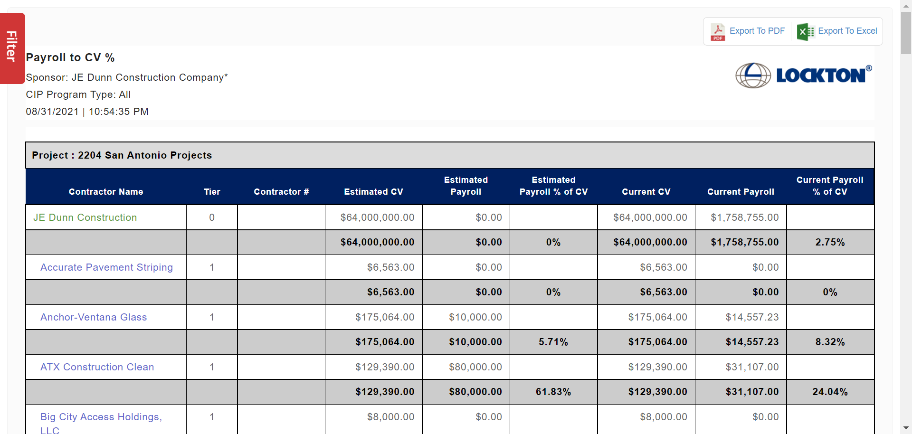

Total Tests
Total Steps
Total Time Taken (Current Run)
1h 2m 34s+740ms
Total Time Taken (Overall)
1h 2m 34s+740ms
Start
2021-09-01 08:32:50
End
2021-09-01 09:35:25
Pass Percentage
Environment
| Param | Value |
|---|---|
| OS | Windows 10 |
| User Name | NDave |
| Java Version | 15.0.2 |
| Host Name | Nourtek-100 |
Categories
| Name |
|---|
| Functional Test |
Tests
-
Report_ContractorStandingReport_Test :: testContractorStandingReport fail2021-09-01 08:32:57 2021-09-01 08:36:12 0h 3m 14s+590mstestContractorStandingReportFunctional Test
Status Timestamp Details 08:32:57 Test Started 08:32:57 Browser Name chrome 08:33:09 https://beta.wrapportal.com/login.aspx?ReturnUrl=%2f Current Url 08:33:09 nourlockton User Name Entered Successfully 08:33:09 kEPl*DiRJ1 Password Entered Successfully 08:33:11 Clicked On Login Button 08:33:11 Login Successfully 08:33:17 Clicked on Report Module Icon 08:33:22 JE Dunn-Dunn VRespective Program Select Form Dropdown 08:33:27 Contractor Standing Report Report is Selected 08:33:30 All Sub-Sponsors Divisions Selected Successfully 08:33:30 Contractor Selected Successfully and clicked 08:34:30 org.openqa.selenium.remote.UnreachableBrowserException: Error communicating with the remote browser. It may have died. Build info: version: '4.0.0-alpha-4', revision: 'c2d955b49e' System info: host: 'NOURTEK-100', ip: '192.168.29.211', os.name: 'Windows 10', os.arch: 'amd64', os.version: '10.0', java.version: '15.0.2' Driver info: driver.version: RemoteWebDriver Capabilities {acceptInsecureCerts: false, browserName: chrome, browserVersion: 92.0.4515.159, chrome: {chromedriverVersion: 92.0.4515.107 (87a818b10553..., userDataDir: C:\Users\NDave\AppData\Loca...}, goog:chromeOptions: {debuggerAddress: localhost:58836}, javascriptEnabled: true, networkConnectionEnabled: false, pageLoadStrategy: normal, platform: WINDOWS, platformName: WINDOWS, proxy: Proxy(), setWindowRect: true, strictFileInteractability: false, timeouts: {implicit: 0, pageLoad: 300000, script: 30000}, unhandledPromptBehavior: dismiss and notify, webauthn:extension:credBlob: true, webauthn:extension:largeBlob: true, webauthn:virtualAuthenticators: true} Session ID: 994493a69da5aafd87164e4bd9128267 Something Went Wrong 08:35:30 testContractorStandingReport Test has been Failed2 08:35:30 org.openqa.selenium.remote.UnreachableBrowserException: Error communicating with the remote browser. It may have died. Build info: version: '4.0.0-alpha-4', revision: 'c2d955b49e' System info: host: 'NOURTEK-100', ip: '192.168.29.211', os.name: 'Windows 10', os.arch: 'amd64', os.version: '10.0', java.version: '15.0.2' Driver info: driver.version: RemoteWebDriver Capabilities {acceptInsecureCerts: false, browserName: chrome, browserVersion: 92.0.4515.159, chrome: {chromedriverVersion: 92.0.4515.107 (87a818b10553..., userDataDir: C:\Users\NDave\AppData\Loca...}, goog:chromeOptions: {debuggerAddress: localhost:58836}, javascriptEnabled: true, networkConnectionEnabled: false, pageLoadStrategy: normal, platform: WINDOWS, platformName: WINDOWS, proxy: Proxy(), setWindowRect: true, strictFileInteractability: false, timeouts: {implicit: 0, pageLoad: 300000, script: 30000}, unhandledPromptBehavior: dismiss and notify, webauthn:extension:credBlob: true, webauthn:extension:largeBlob: true, webauthn:virtualAuthenticators: true} Session ID: 994493a69da5aafd87164e4bd9128267 at org.openqa.selenium.remote.RemoteWebDriver.execute(RemoteWebDriver.java:603) at org.openqa.selenium.remote.RemoteWebDriver.execute(RemoteWebDriver.java:639) at org.openqa.selenium.remote.RemoteWebDriver.execute(RemoteWebDriver.java:643) at org.openqa.selenium.remote.RemoteWebDriver.getScreenshotAs(RemoteWebDriver.java:303) at GenericLibrary.FileUtils1.getScreenshot(FileUtils1.java:86) at TestScript.Report_ContractorStandingReport_Test.testContractorStandingReport(Report_ContractorStandingReport_Test.java:67) at java.base/jdk.internal.reflect.NativeMethodAccessorImpl.invoke0(Native Method) at java.base/jdk.internal.reflect.NativeMethodAccessorImpl.invoke(NativeMethodAccessorImpl.java:64) at java.base/jdk.internal.reflect.DelegatingMethodAccessorImpl.invoke(DelegatingMethodAccessorImpl.java:43) at java.base/java.lang.reflect.Method.invoke(Method.java:564) at org.testng.internal.MethodInvocationHelper.invokeMethod(MethodInvocationHelper.java:133) at org.testng.internal.TestInvoker.invokeMethod(TestInvoker.java:598) at org.testng.internal.TestInvoker.invokeTestMethod(TestInvoker.java:173) at org.testng.internal.MethodRunner.runInSequence(MethodRunner.java:46) at org.testng.internal.TestInvoker$MethodInvocationAgent.invoke(TestInvoker.java:824) at org.testng.internal.TestInvoker.invokeTestMethods(TestInvoker.java:146) at org.testng.internal.TestMethodWorker.invokeTestMethods(TestMethodWorker.java:146) at org.testng.internal.TestMethodWorker.run(TestMethodWorker.java:128) at java.base/java.util.ArrayList.forEach(ArrayList.java:1511) at org.testng.TestRunner.privateRun(TestRunner.java:794) at org.testng.TestRunner.run(TestRunner.java:596) at org.testng.SuiteRunner.runTest(SuiteRunner.java:377) at org.testng.SuiteRunner.runSequentially(SuiteRunner.java:371) at org.testng.SuiteRunner.privateRun(SuiteRunner.java:332) at org.testng.SuiteRunner.run(SuiteRunner.java:276) at org.testng.SuiteRunnerWorker.runSuite(SuiteRunnerWorker.java:53) at org.testng.SuiteRunnerWorker.run(SuiteRunnerWorker.java:96) at org.testng.TestNG.runSuitesSequentially(TestNG.java:1212) at org.testng.TestNG.runSuitesLocally(TestNG.java:1134) at org.testng.TestNG.runSuites(TestNG.java:1063) at org.testng.TestNG.run(TestNG.java:1031) at org.testng.remote.AbstractRemoteTestNG.run(AbstractRemoteTestNG.java:115) at org.testng.remote.RemoteTestNG.initAndRun(RemoteTestNG.java:251) at org.testng.remote.RemoteTestNG.main(RemoteTestNG.java:77) Caused by: java.lang.RuntimeException: NettyHttpHandler request execution error at org.openqa.selenium.remote.http.netty.NettyHttpHandler.makeCall(NettyHttpHandler.java:61) at org.openqa.selenium.remote.http.AddSeleniumUserAgent.lambda$apply$0(AddSeleniumUserAgent.java:42) at org.openqa.selenium.remote.http.Filter.lambda$andFinally$1(Filter.java:55) at org.openqa.selenium.remote.http.netty.NettyHttpHandler.execute(NettyHttpHandler.java:45) at org.openqa.selenium.remote.http.AddSeleniumUserAgent.lambda$apply$0(AddSeleniumUserAgent.java:42) at org.openqa.selenium.remote.http.Filter.lambda$andFinally$1(Filter.java:55) at org.openqa.selenium.remote.http.netty.NettyClient.execute(NettyClient.java:43) at org.openqa.selenium.remote.HttpCommandExecutor.execute(HttpCommandExecutor.java:158) at org.openqa.selenium.remote.service.DriverCommandExecutor.execute(DriverCommandExecutor.java:83) at org.openqa.selenium.remote.RemoteWebDriver.execute(RemoteWebDriver.java:582) ... 33 more Caused by: java.util.concurrent.ExecutionException: java.util.concurrent.TimeoutException: Request timeout to localhost/127.0.0.1:14454 after 60000 ms at java.base/java.util.concurrent.CompletableFuture.reportGet(CompletableFuture.java:395) at java.base/java.util.concurrent.CompletableFuture.get(CompletableFuture.java:2063) at org.asynchttpclient.netty.NettyResponseFuture.get(NettyResponseFuture.java:201) at org.openqa.selenium.remote.http.netty.NettyHttpHandler.makeCall(NettyHttpHandler.java:55) ... 42 more Caused by: java.util.concurrent.TimeoutException: Request timeout to localhost/127.0.0.1:14454 after 60000 ms at org.asynchttpclient.netty.timeout.TimeoutTimerTask.expire(TimeoutTimerTask.java:43) at org.asynchttpclient.netty.timeout.RequestTimeoutTimerTask.run(RequestTimeoutTimerTask.java:50) at io.netty.util.HashedWheelTimer$HashedWheelTimeout.expire(HashedWheelTimer.java:672) at io.netty.util.HashedWheelTimer$HashedWheelBucket.expireTimeouts(HashedWheelTimer.java:747) at io.netty.util.HashedWheelTimer$Worker.run(HashedWheelTimer.java:472) at io.netty.util.concurrent.FastThreadLocalRunnable.run(FastThreadLocalRunnable.java:30) at java.base/java.lang.Thread.run(Thread.java:832)08:36:12 08:36:12 Test Ended -
Report_ClaimCodingContractorSummaryReportTC :: testClaimsCodingContractorSummaryReport pass2021-09-01 08:36:49 2021-09-01 08:38:13 0h 1m 24s+483mstestClaimsCodingContractorSummaryReportFunctional Test
Status Timestamp Details 08:36:49 Test Started 08:36:49 Browser Name chrome 08:37:02 https://beta.wrapportal.com/login.aspx?ReturnUrl=%2f Current Url 08:37:03 nourlockton User Name Entered Successfully 08:37:03 kEPl*DiRJ1 Password Entered Successfully 08:37:04 Clicked On Login Button 08:37:04 Login Successfully 08:37:11 Clicked on Report Module Icon 08:37:13 JE Dunn-Dunn V Respective Program Select Form Dropdown 08:37:18 Claims Coding - Contractor Summary Report Report is Selected 08:37:21 All Sub-Sponsors Selected Successfully 08:37:21 2204 San Antonio Projects Project Selected Successfully 08:37:23 Clicked On Build Report Button 08:37:26 Report Generated 08:37:26 Report Header Name Matched 08:37:26 Report Generated Successfully 08:37:29 First Project Selected Successfully 08:37:31 Clicked on Build Report Button 08:37:35 Second Project Selected Successfully 08:37:36 Clicked on Build Report Button 08:37:36 Clicked on Export To PDF Link 08:37:40 Pdf Generated 
08:37:45 Clicked on Build Report Button 08:37:46 Clicked on Export to Excel Link 08:37:51 Excel file Downloaded Successfully 08:37:51 Clicked on Filter 08:37:54 Clicked on Add Filter Button From Filter 08:37:59 Filter Selected Successfully From Dropdown 08:38:02 Filter Condition Selected Successfully 08:38:03 Parameter Selected Successfully 08:38:04 Clicked on Add Filter Button 08:38:08 Clicked on Build Report Button 08:38:13 testClaimsCodingContractorSummaryReport Test has been Passed1 08:38:13 Test Ended -
Report_ContractorAwardsTC :: testContractorAwards fail2021-09-01 08:38:22 2021-09-01 08:40:04 0h 1m 41s+394mstestContractorAwardsFunctional Test
Status Timestamp Details 08:38:22 Test Started 08:38:22 Browser Name chrome 08:38:37 https://beta.wrapportal.com/login.aspx?ReturnUrl=%2f Current Url 08:38:38 nourlockton User Name Entered Successfully 08:38:38 kEPl*DiRJ1 Password Entered Successfully 08:38:39 Clicked On Login Button 08:38:39 Login Successfully 08:38:46 Clicked on Report Module Icon 08:38:48 JE Dunn-Dunn V Respective Program Select Form Dropdown 08:38:54 Contractor Awards Report is Selected 08:38:57 All Sub-Sponsors Selected Successfully 08:38:57 2204 San Antonio Projects Project Selected Successfully 08:39:03 Clicked On Build Report Button 08:39:06 Report Generated 08:39:06 Report Header Name Matched 08:39:06 Report Generated Successfully 08:39:09 First Project Selected Successfully 08:39:15 Clicked on Build Report Button 08:39:18 Second Project Selected Successfully 08:39:24 Clicked on Build Report Button 08:39:24 Clicked on Export to Excel Link 08:39:29 Excel file is not Downloaded Successfully 08:39:29 Clicked on Filter 08:39:32 Clicked on Add Filter Button From Filter 08:39:44 Filter Selected Successfully From Dropdown 08:39:47 Filter Condition Selected Successfully 08:39:49 Parameter Selected Successfully 08:39:49 Clicked on Add Filter Button 08:39:59 Clicked on Build Report Button 08:40:04 testContractorAwards Test has been Passed1 08:40:04 Test Ended -
Report_ContractorDeductSummaryTC :: testContractorDeductSummary fail2021-09-01 08:40:13 2021-09-01 08:42:31 0h 2m 18s+217mstestContractorDeductSummaryFunctional Test
Status Timestamp Details 08:40:13 Test Started 08:40:13 Browser Name chrome 08:40:28 https://beta.wrapportal.com/login.aspx?ReturnUrl=%2f Current Url 08:40:28 nourlockton User Name Entered Successfully 08:40:28 kEPl*DiRJ1 Password Entered Successfully 08:40:30 Clicked On Login Button 08:40:30 Login Successfully 08:40:38 Clicked on Report Module Icon 08:40:40 JE Dunn-Dunn V Program Select Form Dropdown 08:40:46 Contractor Deduct Summary Report is Selected 08:40:48 All Sub-Sponsors Selected Successfully 08:40:48 2204 San Antonio Projects Project Selected Successfully 08:40:53 Clicked On Build Report Button 08:40:57 Report Generated 08:40:57 Report Header Name Matched 08:40:57 Report Generated Successfully 08:41:00 First Project Selected Successfully 08:41:05 Clicked on Build Report Button 08:41:08 Second Project Selected Successfully 08:41:13 Clicked on Build Report Button 08:41:14 Clicked on Export To PDF Link 08:41:20 Pdf Generated 
08:41:25 Clicked on Build Report Button 08:41:33 Clicked on Export to Excel Link 08:41:38 Excel file is not Downloaded Successfully 08:41:38 Clicked on Filter 08:41:41 Clicked on Add Filter Button From Filter 08:41:58 Filter Selected Successfully From Dropdown 08:42:13 Filter Condition Selected Successfully 08:42:14 Parameter Selected Successfully 08:42:16 Clicked on Add Filter Button 08:42:26 Clicked on Build Report Button 08:42:31 testContractorDeductSummary Test has been Passed1 08:42:31 Test Ended -
Report_ContractorStructureTC :: testContractorStructure pass2021-09-01 08:43:01 2021-09-01 08:46:25 0h 3m 24s+284mstestContractorStructureFunctional Test
Status Timestamp Details 08:43:01 Test Started 08:43:01 Browser Name chrome 08:43:48 https://beta.wrapportal.com/login.aspx?ReturnUrl=%2f Current Url 08:43:48 nourlockton User Name Entered Successfully 08:43:48 kEPl*DiRJ1 Password Entered Successfully 08:43:49 Clicked On Login Button 08:43:49 Login Successfully 08:44:26 Clicked on Report Module Icon 08:44:28 JE Dunn-Dunn V Program Select Form Dropdown 08:44:33 Contractor Structure Report is Selected 08:44:36 All Sub-Sponsors Selected Successfully 08:44:36 2204 San Antonio Projects Project Selected Successfully 08:44:42 Clicked On Build Report Button 08:44:45 Report Generated 
08:44:45 Report Header Name Matched 08:44:45 Report Generated Successfully 08:44:48 First Project Selected Successfully 08:44:53 Clicked on Build Report Button 08:44:56 Second Project Selected Successfully 08:45:09 Clicked on Build Report Button 08:45:09 Clicked on Export To PDF Link 08:45:17 Pdf Generated 
08:45:22 Clicked on Build Report Button 08:45:33 Clicked on Export to Excel Link 08:45:38 Excel file Downloaded Successfully 08:45:38 Clicked on Filter 08:45:41 Clicked on Add Filter Button From Filter 08:45:54 Filter Selected Successfully From Dropdown 08:45:57 Filter Condition Selected Successfully 08:46:04 Parameter Selected Successfully 08:46:08 Clicked on Add Filter Button 08:46:20 Clicked on Build Report Button 08:46:25 testContractorStructure Test has been Passed1 08:46:25 Test Ended -
Report_ContractValueLaborHoursbyProgram_TC :: testContractValueLaborHoursbyProgram fail2021-09-01 08:46:52 2021-09-01 08:50:04 0h 3m 11s+291mstestContractValueLaborHoursbyProgramFunctional Test
Status Timestamp Details 08:46:52 Test Started 08:46:52 Browser Name chrome 08:47:40 https://beta.wrapportal.com/login.aspx?ReturnUrl=%2f Current Url 08:47:40 nourlockton User Name Entered Successfully 08:47:40 kEPl*DiRJ1 Password Entered Successfully 08:47:42 Clicked On Login Button 08:47:42 Login Successfully 08:48:01 Clicked on Report Module Icon 08:48:03 JE Dunn-Dunn V Program Select Form Dropdown 08:48:13 Contract Value and Labor Hours by Program Report is Selected 08:48:24 All Sub-Sponsors Selected Successfully 08:48:24 2204 San Antonio Projects Project Selected Successfully 08:48:29 Clicked On Build Report Button 08:48:32 Report Generated 08:48:32 Report Header Name Matched 08:48:32 Report Generated Successfully 08:48:35 First Project Selected Successfully 08:48:39 Clicked on Build Report Button 08:48:42 Second Project Selected Successfully 08:48:44 Clicked on Build Report Button 08:48:44 Clicked on Export To PDF Link 08:48:50 Pdf Generated 
08:48:55 Clicked on Build Report Button 08:49:04 Clicked on Export to Excel Link 08:49:09 Excel file is not Downloaded Successfully 08:49:10 Clicked on Filter 08:49:13 Clicked on Add Filter Button From Filter 08:49:35 Filter Selected Successfully From Dropdown 08:49:39 Filter Condition Selected Successfully 08:49:40 Parameter Selected Successfully 08:49:54 Clicked on Add Filter Button 08:49:59 Clicked on Build Report Button 08:50:04 testContractValueLaborHoursbyProgram Test has been Passed1 08:50:04 Test Ended -
Report_ContractorStatusTC :: testContractorStatus fail2021-09-01 08:50:32 2021-09-01 08:53:41 0h 3m 8s+343mstestContractorStatusFunctional Test
Status Timestamp Details 08:50:32 Test Started 08:50:32 Browser Name chrome 08:51:06 https://beta.wrapportal.com/login.aspx?ReturnUrl=%2f Current Url 08:51:06 nourlockton User Name Entered Successfully 08:51:06 kEPl*DiRJ1 Password Entered Successfully 08:51:08 Clicked On Login Button 08:51:08 Login Successfully 08:51:24 Clicked on Report Module Icon 08:51:26 JE Dunn-Dunn V Program Select Form Dropdown 08:51:31 Contractor Status Report is Selected 08:51:33 All Sub-Sponsors Selected Successfully 08:51:33 2204 San Antonio Projects Project Selected Successfully 08:51:52 Clicked On Build Report Button 08:51:55 Report Generated 08:51:55 Report Header Name Matched 08:51:55 Report Generated Successfully 08:51:59 First Project Selected Successfully 08:52:10 Clicked on Build Report Button 08:52:13 Second Project Selected Successfully 08:52:20 Clicked on Build Report Button 08:52:20 Clicked on Export To PDF Link 08:52:28 Pdf Generated 
08:52:33 Clicked on Build Report Button 08:52:40 Clicked on Export to Excel Link 08:52:45 Excel file is not Downloaded Successfully 08:52:45 Clicked on Filter 08:52:48 Clicked on Add Filter Button From Filter 08:53:14 Filter Selected Successfully From Dropdown 08:53:17 Filter Condition Selected Successfully 08:53:26 Parameter Selected Successfully 08:53:27 Clicked on Add Filter Button 08:53:35 Clicked on Build Report Button 08:53:41 testContractorStatus Test has been Passed1 08:53:41 Test Ended -
Report_EnrolledContractorsListTC :: testEnrolledContractors fail2021-09-01 08:54:00 2021-09-01 08:56:49 0h 2m 48s+313mstestEnrolledContractorsFunctional Test
Status Timestamp Details 08:54:00 Test Started 08:54:00 Browser Name chrome 08:54:33 https://beta.wrapportal.com/login.aspx?ReturnUrl=%2f Current Url 08:54:33 nourlockton User Name Entered Successfully 08:54:33 kEPl*DiRJ1 Password Entered Successfully 08:54:34 Clicked On Login Button 08:54:34 Login Successfully 08:54:55 Clicked on Report Module Icon 08:54:57 JE Dunn-Dunn V Respective Program Select Form Dropdown 08:55:02 Enrolled Contractors Report is Selected 08:55:07 All Sub-Sponsors Selected Successfully 08:55:07 2204 San Antonio Projects Project Selected Successfully 08:55:12 Clicked On Build Report Button 08:55:15 Report Generated 08:55:15 Report Header Name Matched 08:55:15 Report Generated Successfully 08:55:18 First Project Selected Successfully 08:55:18 Second Project Selected Successfully 08:55:21 Clicked on Build Report Button 08:55:21 Clicked on Export To PDF Link 08:55:32 Pdf Generated 
08:55:37 Clicked on Build Report Button 08:55:48 Clicked on Export to Excel Link 08:55:53 Excel file is not Downloaded Successfully 08:55:53 Clicked on Filter 08:55:56 Clicked on Add Filter Button From Filter 08:56:26 Filter Selected Successfully From Dropdown 08:56:36 Filter Condition Selected Successfully 08:56:37 Parameter Selected Successfully 08:56:38 Clicked on Add Filter Button 08:56:44 Clicked on Build Report Button 08:56:49 testEnrolledContractors Test has been Passed1 08:56:49 Test Ended -
Report_EnrollmentReportTC :: testEnrollmentReport fail2021-09-01 08:57:12 2021-09-01 09:02:47 0h 5m 35s+98mstestEnrollmentReportFunctional Test
Status Timestamp Details 08:57:12 Test Started 08:57:12 Browser Name chrome 08:58:10 https://beta.wrapportal.com/login.aspx?ReturnUrl=%2f Current Url 08:58:10 nourlockton User Name Entered Successfully 08:58:10 kEPl*DiRJ1 Password Entered Successfully 08:58:12 Clicked On Login Button 08:58:12 Login Successfully 08:58:32 Clicked on Report Module Icon 08:58:34 JE Dunn-Dunn V Program Select Form Dropdown 08:58:39 Enrollment Report Report is Selected 08:58:55 All Sub-Sponsors Selected Successfully 08:58:55 2204 San Antonio Projects Project Selected Successfully 08:59:12 Clicked On Build Report Button 08:59:15 Report Generated 08:59:15 Report Header Name Matched 08:59:15 Report Generated Successfully 08:59:18 First Project Selected Successfully 08:59:49 Clicked on Build Report Button 08:59:52 Second Project Selected Successfully 09:00:30 Clicked on Build Report Button 09:00:31 Clicked on Export To PDF Link 09:01:08 Pdf Generated 
09:01:14 Clicked on Build Report Button 09:01:49 Clicked on Export to Excel Link 09:01:54 Excel file is not Downloaded Successfully 09:01:55 Clicked on Filter 09:01:58 Clicked on Add Filter Button From Filter 09:02:29 Filter Selected Successfully From Dropdown 09:02:34 Filter Condition Selected Successfully 09:02:36 Parameter Selected Successfully 09:02:38 Clicked on Add Filter Button 09:02:42 Clicked on Build Report Button 09:02:47 testEnrollmentReport Test has been Passed1 09:02:47 Test Ended -
Report_EstimatedEndDatesTC :: testEstimatedEndDates fail2021-09-01 09:03:31 2021-09-01 09:06:12 0h 2m 40s+133mstestEstimatedEndDatesFunctional Test
Status Timestamp Details 09:03:31 Test Started 09:03:31 Browser Name chrome 09:04:23 https://beta.wrapportal.com/login.aspx?ReturnUrl=%2f Current Url 09:04:23 nourlockton User Name Entered Successfully 09:04:23 kEPl*DiRJ1 Password Entered Successfully 09:04:25 Clicked On Login Button 09:04:25 Login Successfully 09:04:35 Clicked on Report Module Icon 09:04:38 JE Dunn-Dunn V Program Select Form Dropdown 09:04:43 Estimated End Dates Report is Selected 09:04:50 All Sub-Sponsors Selected Successfully 09:04:50 2204 San Antonio Projects Project Selected Successfully 09:04:53 Clicked On Build Report Button 09:04:56 Report Generated 09:04:56 Report Header Name Matched 09:04:56 Report Generated Successfully 09:04:59 First Project Selected Successfully 09:05:04 Clicked on Build Report Button 09:05:07 Second Project Selected Successfully 09:05:12 Clicked on Build Report Button 09:05:12 Clicked on Export To PDF Link 09:05:20 Pdf Generated 
09:05:25 Clicked on Build Report Button 09:05:26 Clicked on Export to Excel Link 09:05:31 Excel file is not Downloaded Successfully 09:05:32 Clicked on Filter 09:05:35 Clicked on Add Filter Button From Filter 09:05:49 Filter Selected Successfully From Dropdown 09:05:56 Filter Condition Selected Successfully 09:05:57 Parameter Selected Successfully 09:05:58 Clicked on Add Filter Button 09:06:06 Clicked on Build Report Button 09:06:12 testEstimatedEndDates Test has been Passed1 09:06:12 Test Ended -
Report_FinalDeductTC :: testFinalDeduct fail2021-09-01 09:06:33 2021-09-01 09:08:48 0h 2m 14s+882mstestFinalDeductFunctional Test
Status Timestamp Details 09:06:33 Test Started 09:06:33 Browser Name chrome 09:07:34 org.openqa.selenium.remote.UnreachableBrowserException: Error communicating with the remote browser. It may have died. Build info: version: '4.0.0-alpha-4', revision: 'c2d955b49e' System info: host: 'NOURTEK-100', ip: '192.168.29.211', os.name: 'Windows 10', os.arch: 'amd64', os.version: '10.0', java.version: '15.0.2' Driver info: driver.version: RemoteWebDriver Capabilities {acceptInsecureCerts: false, browserName: chrome, browserVersion: 92.0.4515.159, chrome: {chromedriverVersion: 92.0.4515.107 (87a818b10553..., userDataDir: C:\Users\NDave\AppData\Loca...}, goog:chromeOptions: {debuggerAddress: localhost:49489}, javascriptEnabled: true, networkConnectionEnabled: false, pageLoadStrategy: normal, platform: WINDOWS, platformName: WINDOWS, proxy: Proxy(), setWindowRect: true, strictFileInteractability: false, timeouts: {implicit: 0, pageLoad: 300000, script: 30000}, unhandledPromptBehavior: dismiss and notify, webauthn:extension:credBlob: true, webauthn:extension:largeBlob: true, webauthn:virtualAuthenticators: true} Session ID: 31210763f351f1f71f0ce6c50e23287f Something Went Wrong 09:07:48 Something Went Wrong 
09:08:18 org.openqa.selenium.NoSuchElementException: no such element: Unable to locate element: {"method":"xpath","selector":"//div[@id='divTableData']//tr[1]//td[1]"} (Session info: chrome=92.0.4515.159) For documentation on this error, please visit: https://selenium.dev/exceptions/#no_such_element Build info: version: '4.0.0-alpha-4', revision: 'c2d955b49e' System info: host: 'NOURTEK-100', ip: '192.168.29.211', os.name: 'Windows 10', os.arch: 'amd64', os.version: '10.0', java.version: '15.0.2' Driver info: org.openqa.selenium.chrome.ChromeDriver Capabilities {acceptInsecureCerts: false, browserName: chrome, browserVersion: 92.0.4515.159, chrome: {chromedriverVersion: 92.0.4515.107 (87a818b10553..., userDataDir: C:\Users\NDave\AppData\Loca...}, goog:chromeOptions: {debuggerAddress: localhost:49489}, javascriptEnabled: true, networkConnectionEnabled: false, pageLoadStrategy: normal, platform: WINDOWS, platformName: WINDOWS, proxy: Proxy(), setWindowRect: true, strictFileInteractability: false, timeouts: {implicit: 0, pageLoad: 300000, script: 30000}, unhandledPromptBehavior: dismiss and notify, webauthn:extension:credBlob: true, webauthn:extension:largeBlob: true, webauthn:virtualAuthenticators: true} Session ID: 31210763f351f1f71f0ce6c50e23287f *** Element info: {Using=xpath, value=//div[@id='divTableData']//tr[1]//td[1]}Report Header Name Not Matched 09:08:48 testFinalDeduct Test has been Failed2 09:08:48 org.openqa.selenium.NoSuchElementException: no such element: Unable to locate element: {"method":"xpath","selector":"//div[@class='filters']"} (Session info: chrome=92.0.4515.159) For documentation on this error, please visit: https://selenium.dev/exceptions/#no_such_element Build info: version: '4.0.0-alpha-4', revision: 'c2d955b49e' System info: host: 'NOURTEK-100', ip: '192.168.29.211', os.name: 'Windows 10', os.arch: 'amd64', os.version: '10.0', java.version: '15.0.2' Driver info: org.openqa.selenium.chrome.ChromeDriver Capabilities {acceptInsecureCerts: false, browserName: chrome, browserVersion: 92.0.4515.159, chrome: {chromedriverVersion: 92.0.4515.107 (87a818b10553..., userDataDir: C:\Users\NDave\AppData\Loca...}, goog:chromeOptions: {debuggerAddress: localhost:49489}, javascriptEnabled: true, networkConnectionEnabled: false, pageLoadStrategy: normal, platform: WINDOWS, platformName: WINDOWS, proxy: Proxy(), setWindowRect: true, strictFileInteractability: false, timeouts: {implicit: 0, pageLoad: 300000, script: 30000}, unhandledPromptBehavior: dismiss and notify, webauthn:extension:credBlob: true, webauthn:extension:largeBlob: true, webauthn:virtualAuthenticators: true} Session ID: 31210763f351f1f71f0ce6c50e23287f *** Element info: {Using=xpath, value=//div[@class='filters']} at java.base/jdk.internal.reflect.NativeConstructorAccessorImpl.newInstance0(Native Method) at java.base/jdk.internal.reflect.NativeConstructorAccessorImpl.newInstance(NativeConstructorAccessorImpl.java:64) at java.base/jdk.internal.reflect.DelegatingConstructorAccessorImpl.newInstance(DelegatingConstructorAccessorImpl.java:45) at java.base/java.lang.reflect.Constructor.newInstanceWithCaller(Constructor.java:500) at java.base/java.lang.reflect.Constructor.newInstance(Constructor.java:481) at org.openqa.selenium.remote.codec.w3c.W3CHttpResponseCodec.createException(W3CHttpResponseCodec.java:196) at org.openqa.selenium.remote.codec.w3c.W3CHttpResponseCodec.decode(W3CHttpResponseCodec.java:129) at org.openqa.selenium.remote.codec.w3c.W3CHttpResponseCodec.decode(W3CHttpResponseCodec.java:53) at org.openqa.selenium.remote.HttpCommandExecutor.execute(HttpCommandExecutor.java:161) at org.openqa.selenium.remote.service.DriverCommandExecutor.execute(DriverCommandExecutor.java:83) at org.openqa.selenium.remote.RemoteWebDriver.execute(RemoteWebDriver.java:582) at org.openqa.selenium.remote.RemoteWebDriver.findElement(RemoteWebDriver.java:333) at org.openqa.selenium.remote.RemoteWebDriver.findElementByXPath(RemoteWebDriver.java:451) at org.openqa.selenium.By$ByXPath.findElement(By.java:394) at org.openqa.selenium.remote.RemoteWebDriver.findElement(RemoteWebDriver.java:325) at ObjectRepository.Report_FinalDeduct.filterWindowButton(Report_FinalDeduct.java:121) at TestScript.Report_FinalDeductTC.testFinalDeduct(Report_FinalDeductTC.java:88) at java.base/jdk.internal.reflect.NativeMethodAccessorImpl.invoke0(Native Method) at java.base/jdk.internal.reflect.NativeMethodAccessorImpl.invoke(NativeMethodAccessorImpl.java:64) at java.base/jdk.internal.reflect.DelegatingMethodAccessorImpl.invoke(DelegatingMethodAccessorImpl.java:43) at java.base/java.lang.reflect.Method.invoke(Method.java:564) at org.testng.internal.MethodInvocationHelper.invokeMethod(MethodInvocationHelper.java:133) at org.testng.internal.TestInvoker.invokeMethod(TestInvoker.java:598) at org.testng.internal.TestInvoker.invokeTestMethod(TestInvoker.java:173) at org.testng.internal.MethodRunner.runInSequence(MethodRunner.java:46) at org.testng.internal.TestInvoker$MethodInvocationAgent.invoke(TestInvoker.java:824) at org.testng.internal.TestInvoker.invokeTestMethods(TestInvoker.java:146) at org.testng.internal.TestMethodWorker.invokeTestMethods(TestMethodWorker.java:146) at org.testng.internal.TestMethodWorker.run(TestMethodWorker.java:128) at java.base/java.util.ArrayList.forEach(ArrayList.java:1511) at org.testng.TestRunner.privateRun(TestRunner.java:794) at org.testng.TestRunner.run(TestRunner.java:596) at org.testng.SuiteRunner.runTest(SuiteRunner.java:377) at org.testng.SuiteRunner.runSequentially(SuiteRunner.java:371) at org.testng.SuiteRunner.privateRun(SuiteRunner.java:332) at org.testng.SuiteRunner.run(SuiteRunner.java:276) at org.testng.SuiteRunnerWorker.runSuite(SuiteRunnerWorker.java:53) at org.testng.SuiteRunnerWorker.run(SuiteRunnerWorker.java:96) at org.testng.TestNG.runSuitesSequentially(TestNG.java:1212) at org.testng.TestNG.runSuitesLocally(TestNG.java:1134) at org.testng.TestNG.runSuites(TestNG.java:1063) at org.testng.TestNG.run(TestNG.java:1031) at org.testng.remote.AbstractRemoteTestNG.run(AbstractRemoteTestNG.java:115) at org.testng.remote.RemoteTestNG.initAndRun(RemoteTestNG.java:251) at org.testng.remote.RemoteTestNG.main(RemoteTestNG.java:77)09:08:48 09:08:48 Test Ended -
Report_InitialDeduct_TC :: testInitialDeductReport fail2021-09-01 09:09:04 2021-09-01 09:13:02 0h 3m 58s+785mstestInitialDeductReportFunctional Test
Status Timestamp Details 09:09:04 Test Started 09:09:04 Browser Name chrome 09:10:10 https://beta.wrapportal.com/login.aspx?ReturnUrl=%2f Current Url 09:10:11 nourlockton User Name Entered Successfully 09:10:11 kEPl*DiRJ1 Password Entered Successfully 09:10:12 Clicked On Login Button 09:10:12 Login Successfully 09:10:33 Clicked on Report Module Icon 09:10:36 JE Dunn-Dunn V Program Select Form Dropdown 09:10:40 Initial Deduct Report is Selected 09:10:53 All Sub-Sponsors Selected Successfully 09:10:53 2204 San Antonio Projects Project Selected Successfully 09:10:58 Contractor Selected Successfully 09:11:10 Clicked On Build Report Button 09:11:13 Report Generated 09:11:14 Report Header Name Matched 09:11:14 Report Generated Successfully 09:11:17 First Project Selected Successfully 09:11:30 Clicked on Build Report Button 09:11:34 Second Project Selected Successfully 09:11:51 Clicked on Build Report Button 09:11:51 Clicked on Export To PDF Link 09:12:03 Pdf Generated 
09:12:08 Clicked on Build Report Button 09:12:14 Clicked on Export to Excel Link 09:12:19 Excel file is not Downloaded Successfully 09:12:19 Clicked on Filter 09:12:23 Clicked on Add Filter Button From Filter 09:12:41 Filter Selected Successfully From Dropdown 09:12:45 Filter Condition Selected Successfully 09:12:46 Parameter Selected Successfully 09:12:49 Clicked on Add Filter Button 09:12:57 Clicked on Build Report Button 09:13:02 testInitialDeductReport Test has been Passed1 09:13:02 Test Ended -
Report_AgendaTC :: testAgendaReport pass2021-09-01 09:13:22 2021-09-01 09:15:01 0h 1m 38s+211mstestAgendaReportFunctional Test
Status Timestamp Details 09:13:22 Test Started 09:13:22 Browser Name chrome 09:13:59 https://beta.wrapportal.com/login.aspx?ReturnUrl=%2f Current Url 09:13:59 nourlockton User Name Entered Successfully 09:13:59 kEPl*DiRJ1 Password Entered Successfully 09:14:01 Clicked On Login Button 09:14:01 Login Successfully 09:14:33 Clicked on Report Module Icon 09:14:35 JE Dunn-Dunn V Program Select Form Dropdown 09:14:40 Agenda Report is Selected 09:14:53 2204 San Antonio Projects Project Selected Successfully 09:14:58 Clicked On Build Report Button 09:15:01 Report Header Name Matched 09:15:01 Report Generated Successfully 09:15:01 testAgendaReport Test has been Passed1 09:15:01 Test Ended -
Report_MissingPayrollReportTC :: testMissingPayrollReport fail2021-09-01 09:15:24 2021-09-01 09:18:26 0h 3m 1s+934mstestMissingPayrollReportFunctional Test
Status Timestamp Details 09:15:24 Test Started 09:15:24 Browser Name chrome 09:15:38 https://beta.wrapportal.com/login.aspx?ReturnUrl=%2f Current Url 09:15:38 nourlockton User Name Entered Successfully 09:15:38 kEPl*DiRJ1 Password Entered Successfully 09:15:40 Clicked On Login Button 09:15:40 Login Successfully 09:16:06 Clicked on Report Module Icon 09:16:14 JE Dunn-Dunn VRespective Program Select Form Dropdown 09:16:19 Missing Payroll Report Report is Selected 09:16:28 All Sub-Sponsors Selected Successfully 09:16:28 2204 San Antonio Projects Project Selected Successfully 09:16:31 Contractor Selected Successfully 09:16:31 Jan - 2020 From Date Added Successfully 09:16:31 Apr - 2021 To Date Added Successfully 09:16:49 Clicked On Build Report Button 09:16:52 Report Generated 09:16:52 Report Header Name Matched 09:16:52 Report Generated Successfully 09:16:53 Clicked on Export To PDF Link 09:17:11 Pdf Generated 
09:17:16 Clicked on Build Report Button 09:17:32 Clicked on Export to Excel Link 09:17:37 Excel file is not Downloaded Successfully 09:17:38 Clicked on Filter 09:17:41 Clicked on Add Filter Button From Filter 09:17:50 Filter Selected Successfully From Dropdown 09:17:56 Filter Condition Selected Successfully 09:17:57 Parameter Selected Successfully 09:17:59 Clicked on Add Filter Button 09:18:21 Clicked on Build Report Button 09:18:26 testMissingPayrollReport Test has been Passed1 09:18:26 Test Ended -
Report_SponsorProjectDetailTC :: testSponsorProjectDetail fail2021-09-01 09:18:39 2021-09-01 09:20:31 0h 1m 51s+492mstestSponsorProjectDetailFunctional Test
Status Timestamp Details 09:18:39 Test Started 09:18:39 Browser Name chrome 09:19:24 https://beta.wrapportal.com/login.aspx?ReturnUrl=%2f Current Url 09:19:24 nourlockton User Name Entered Successfully 09:19:24 kEPl*DiRJ1 Password Entered Successfully 09:19:25 Clicked On Login Button 09:19:25 Login Successfully 09:19:41 Clicked on Report Module Icon 09:19:43 JE Dunn-Dunn V Program Select Form Dropdown 09:19:48 Sponsor Program Detail Report is Selected 09:19:50 All Sub-Sponsors Selected Successfully 09:19:50 2204 San Antonio Projects Project Selected Successfully 09:19:56 Clicked On Build Report Button 09:19:59 Report Generated 09:19:59 Report Header Name Matched 09:19:59 Report Generated Successfully 09:20:02 First Project Selected Successfully 09:20:04 Clicked on Build Report Button 09:20:07 Second Project Selected Successfully 09:20:10 Clicked on Build Report Button 09:20:10 Clicked on Export To PDF Link 09:20:15 Pdf Generated 
09:20:20 Clicked on Build Report Button 09:20:21 Clicked on Export to Excel Link 09:20:26 Excel file is not Downloaded Successfully 09:20:31 testSponsorProjectDetail Test has been Passed1 09:20:31 Test Ended -
Report_PayrollComparisonTC :: testPayrollComparison fail2021-09-01 09:20:39 2021-09-01 09:23:06 0h 2m 26s+672mstestPayrollComparisonFunctional Test
Status Timestamp Details 09:20:39 Test Started 09:20:39 Browser Name chrome 09:21:06 https://beta.wrapportal.com/login.aspx?ReturnUrl=%2f Current Url 09:21:06 nourlockton User Name Entered Successfully 09:21:06 kEPl*DiRJ1 Password Entered Successfully 09:21:08 Clicked On Login Button 09:21:08 Login Successfully 09:21:25 Clicked on Report Module Icon 09:21:27 JE Dunn-Dunn V Program Select Form Dropdown 09:21:33 Payroll Comparison Report is Selected 09:21:36 All Sub-Sponsors Selected Successfully 09:21:36 2204 San Antonio Projects Project Selected Successfully 09:21:36 From Date Selected Successfully 09:21:36 To Date Selected Successfully 09:21:45 Clicked On Build Report Button 09:21:48 Report Generated 
09:21:48 Report Header Name Matched 09:21:48 Report Generated Successfully 09:21:51 First Project Selected Successfully 09:22:08 Clicked on Build Report Button 09:22:11 Second Project Selected Successfully 09:22:19 Clicked on Build Report Button 09:22:19 Clicked on Export to Excel Link 09:22:24 Excel file is not Downloaded Successfully 09:22:26 Clicked on Filter 09:22:29 Clicked on Add Filter Button From Filter 09:22:41 Filter Selected Successfully From Dropdown 09:22:44 Filter Condition Selected Successfully 09:22:49 Parameter Selected Successfully 09:22:52 Clicked on Add Filter Button 09:23:00 Clicked on Build Report Button 09:23:06 testPayrollComparison Test has been Passed1 09:23:06 Test Ended -
Report_PayrollToCVPercentageTC :: testPayrollToCVPercentage fail2021-09-01 09:23:23 2021-09-01 09:26:21 0h 2m 58s+42mstestPayrollToCVPercentageFunctional Test
Status Timestamp Details 09:23:23 Test Started 09:23:23 Browser Name chrome 09:23:48 https://beta.wrapportal.com/login.aspx?ReturnUrl=%2f Current Url 09:23:49 nourlockton User Name Entered Successfully 09:23:49 kEPl*DiRJ1 Password Entered Successfully 09:23:50 Clicked On Login Button 09:23:50 Login Successfully 09:24:16 Clicked on Report Module Icon 09:24:18 JE Dunn-Dunn VRespective Program Select Form Dropdown 09:24:24 Payroll to CV Percentage Report is Selected 09:24:33 All Sub-Sponsors Selected Successfully 09:24:33 2204 San Antonio Projects Project Selected Successfully 09:24:34 Clicked On Build Report Button 09:24:38 Report Generated 09:24:38 Report Header Name Matched 09:24:38 Report Generated Successfully 09:24:41 First Project Selected Successfully 09:24:48 Clicked on Build Report Button 09:24:51 Second Project Selected Successfully 09:24:54 Clicked on Build Report Button 09:24:54 Clicked on Export To PDF Link 09:25:00 Pdf Generated 09:25:05 Clicked on Build Report Button 09:25:09 Clicked on Export to Excel Link 09:25:14 Excel file is not Downloaded Successfully 09:25:14 Clicked on Filter 09:25:17 Clicked on Add Filter Button From Filter 09:25:39 Filter Selected Successfully From Dropdown 09:25:45 Filter Condition Selected Successfully 09:25:46 Parameter Selected Successfully 09:25:56 Clicked on Add Filter Button 09:26:16 Clicked on Build Report Button 09:26:21 testPayrollToCVPercentage Test has been Passed1 09:26:21 Test Ended -
Report_SuspendedPayrollReportTC :: testSuspendedPayrollReport fail2021-09-01 09:26:41 2021-09-01 09:29:22 0h 2m 40s+950mstestSuspendedPayrollReportFunctional Test
Status Timestamp Details 09:26:41 Test Started 09:26:41 Browser Name chrome 09:27:17 https://beta.wrapportal.com/login.aspx?ReturnUrl=%2f Current Url 09:27:17 nourlockton User Name Entered Successfully 09:27:17 kEPl*DiRJ1 Password Entered Successfully 09:27:19 Clicked On Login Button 09:27:19 Login Successfully 09:27:36 Clicked on Report Module Icon 09:27:38 JE Dunn-Dunn V Program Select Form Dropdown 09:27:43 Suspended Payroll Report Report is Selected 09:27:54 All Sub-Sponsors Selected Successfully 09:27:55 2204 San Antonio Projects Project Selected Successfully 09:27:59 Contractor Selected Successfully 09:28:06 Clicked On Build Report Button 09:28:10 Report Generated 09:28:10 Report Header Name Matched 09:28:10 Report Generated Successfully 09:28:13 First Project Selected Successfully 09:28:25 Clicked on Build Report Button 09:28:28 Second Project Selected Successfully 09:28:33 Clicked on Build Report Button 09:28:33 Clicked on Export To PDF Link 09:28:37 Pdf Generated 
09:28:42 Clicked on Build Report Button 09:28:50 Clicked on Export to Excel Link 09:28:55 Excel file is not Downloaded Successfully 09:28:55 Clicked on Filter 09:28:58 Clicked on Add Filter Button From Filter 09:29:06 Filter Selected Successfully From Dropdown 09:29:09 Filter Condition Selected Successfully 09:29:11 Parameter Selected Successfully 09:29:12 Clicked on Add Filter Button 09:29:17 Clicked on Build Report Button 09:29:22 testSuspendedPayrollReport Test has been Passed1 09:29:22 Test Ended -
Report_TotalMonthlyPayrollTC :: testTotalMonthlyPayroll fail2021-09-01 09:29:44 2021-09-01 09:35:16 0h 5m 31s+851mstestTotalMonthlyPayrollFunctional Test
Status Timestamp Details 09:29:44 Test Started 09:29:44 Browser Name chrome 09:30:41 https://beta.wrapportal.com/login.aspx?ReturnUrl=%2f Current Url 09:30:41 nourlockton User Name Entered Successfully 09:30:41 kEPl*DiRJ1 Password Entered Successfully 09:30:43 Clicked On Login Button 09:30:43 Login Successfully 09:31:17 Clicked on Report Module Icon 09:31:19 JE Dunn-Dunn V Program Select Form Dropdown 09:31:33 Total Monthly Payroll Report is Selected 09:31:40 All Sub-Sponsors Selected Successfully 09:31:40 2204 San Antonio Projects Project Selected Successfully 09:31:46 From Date Selected Successfully 09:31:46 To Date Selected Successfully 09:32:00 Clicked On Build Report Button 09:32:03 Report Generated 09:32:03 Report Header Name Matched 09:32:03 Report Generated Successfully 09:32:07 First Project Selected Successfully 09:32:31 Clicked on Build Report Button 09:32:35 Second Project Selected Successfully 09:32:53 Clicked on Build Report Button 09:32:54 Clicked on Export To PDF Link 09:33:20 Pdf Generated 
09:33:25 Clicked on Build Report Button 09:33:46 Clicked on Export to Excel Link 09:33:51 Excel file is not Downloaded Successfully 09:33:51 Clicked on Filter 09:33:54 Clicked on Add Filter Button From Filter 09:34:28 Filter Selected Successfully From Dropdown 09:34:34 Filter Condition Selected Successfully 09:34:35 Parameter Selected Successfully 09:34:53 Clicked on Add Filter Button 09:35:11 Clicked on Build Report Button 09:35:16 testTotalMonthlyPayroll Test has been Passed1 09:35:16 Test Ended